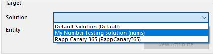
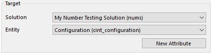
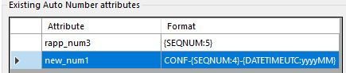

"An XrmToolBox
plugin to manage the Auto Number features introduced for Microsoft Dynamics 365, October 2017."
- Jonas Rapp
Introduction
The primary goal of the tool is to give Microsoft Dynamics 365 customizers a way of managing Auto Number attributes.
This feature was introduced with the 9.0 release from October 2017.
However, this release only supports creating and managing these attributes through the SDK.
A user interface for the features is expected to be available from the 9.1 release of the platform.
With the Auto Number Manager for XrmToolBox you can create, alter and delete these attributes through an easy to use UI.
Read more about the features for auto numbers and the technology behind it in blog post
Auto Number attributes in Microsoft Dynamics 365
How-to
Solution
The Solution dropdown will display all available unmanaged solutions in the system.
Select the solution in which to work with auto number attributes.
The prefix of the publisher of the solution will be used for new attributes created.
Entity
The Entity dropdown will display all entities included in the selected solution.
Select the entity for which to work with auto number attributes.
New Attribute
Click this button to create a new Auto Number attribute for the selected entity in the selected solution.Existing attributes
The table will display logical name and auto number format for existing auto number attributes on the selected entity.
Select an attribute to view the attribute properties, and to update properties or seed (next value to assign).
Attribute properties

This box contains all properties relevant to auto number attributes.
-
Logical Name
This can only be entered for new attributes. Prefix is taken from the publisher of the selected solution. -
Display Name
The display name in the locale of the current user. See property Language Id below. -
Description
The description of the attribute in the locale of the current user. See property Language Id below. -
Maximum Length
The max length of the attribute. Note that the length must be equal to or greater than the length of the resulting number! If too short, it will not be possible to create records. -
Language Id
The language for which to create or update Display Name and Description. This field is pre populated based on current user's settings. -
Number Format
This is where the magic happens.
The format can contain any text or characters, and must contain one placeholder for sequential number.
The format can contain one or more placeholders for random strings and date/time string.
To delete a number format, clear this field and check the Don't require SEQNUM box.
See samples below. -
Don't require SEQNUM
Added after screenshot was made
If this is checked, it is not required to include a SEQNUM component in the Number Format. This will NOT guarantee unique values!
To delete a number format, check this box and clear the Number Format field. -
Seed
The seed defines next sequence number to use.
When creating a new attribute, this will be set to 1 in nothing is entered.
When updating an existing attribte, this should be left empty, unless you specifically want to change the existing number series!
Note that updating the seed for an existing attribute MAY result in duplicated information for new records! -
Sample Number
This field will show a sample of the generated auto number, based on the information given above.
Create / Update
Execute creation or update of the attribute with given properties.Delete
This will delete the attribute from the entity and data for existing records. This action is not possible to undo, data is LOST!Show data with FXB
Click this button to open FetchXML Builder with a query to get the last ten records for the selected entity, with primary name, created on, and any auto number attributes included.Samples
Number Format Example value
CAR-{SEQNUM:3}-{RANDSTRING:6} CAR-123-AB7LSF
CNR-{RANDSTRING:4}-{SEQNUM:4} CNR-WXYZ-1000
{SEQNUM:6}-#-{RANDSTRING:3} 123456-#-R3V
KA-{SEQNUM:4} KA-0001
{SEQNUM:10} 1234567890
QUO-{SEQNUM:3}#{RANDSTRING:3}#{RANDSTRING:5} QUO-123#ABC#PQ2ST
QUO-{SEQNUM:7}{RANDSTRING:5} QUO-0001000P9G3R
CAS-{SEQNUM:6}-{RANDSTRING:6}-{DATETIMEUTC:yyyyMMddhhmmss} CAS-002000-S1P0H0-20170913091544
CAS-{SEQNUM:6}-{DATETIMEUTC:yyyyMMddhh}-{RANDSTRING:6} CAS-002002-2017091309-HTZOUR
DateTime placeholders accepts Standard Date and Time format strings.Documentation
Full SDK documentation is available here: https://docs.microsoft.com/en-us/dynamics365/customer-engagement/developer/create-auto-number-attributes
Other XrmToolBox plugins from Jonas Rapp
| FetchXML Builder: | fxb.xrmtoolbox.com |
| Plugin Trace Viewer: | ptv.xrmtoolbox.com |
| Bulk Data Updater: | github.com/rappen/BulkDataUpdater |
| Latebound Constants Generator: | github.com/rappen/LateboundConstantsGenerator |
| Related Records Analyzer: | github.com/rappen/RelatedRecordsAnalyzer |
Visitor count for ANM, PTV and FXB since 2015-02-19:
Latest release

|
|
|---|---|
| Version | Loading version... |
| Publish date | Loading publish date... |
| Downloads (total) + |
Loading download count...
|
|
Issues
|
|
| Open | |
| Total | |